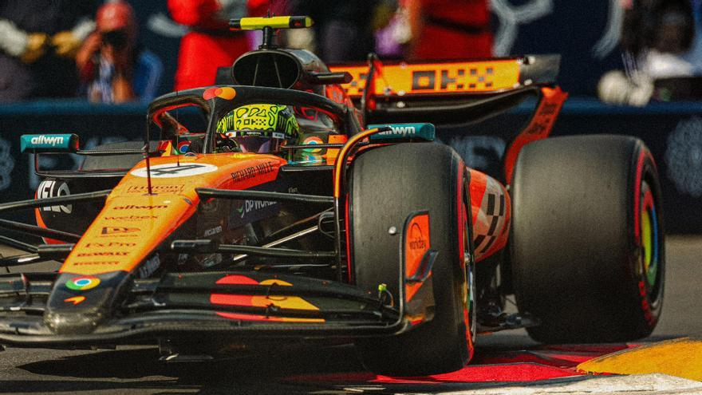
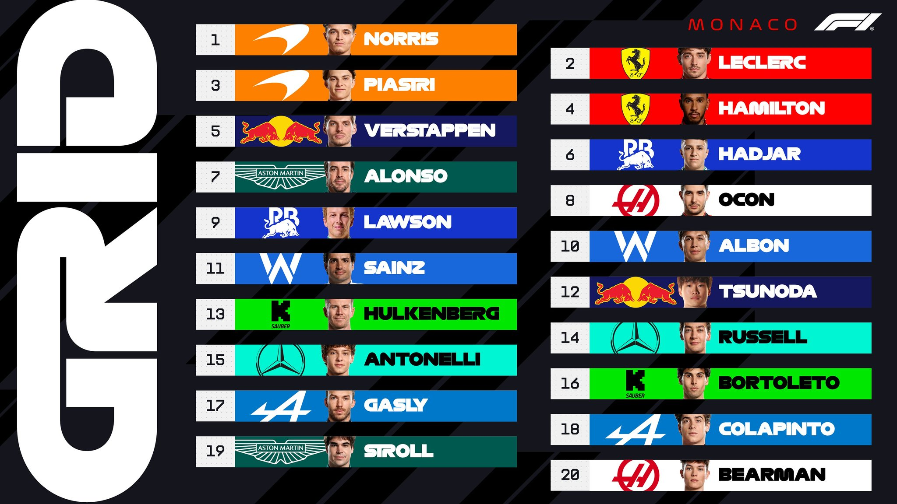

Lando Norris logra la pole en Mónaco con vuelta récord; Leclerc y Piastri completan el top 3
En una clasificación vibrante este sábado 24 de mayo de 2025, Lando Norris se alzó con la pole position para el Gran Premio de Mónaco, marcando un tiempo récord de 1:09.954. El piloto de McLaren superó por apenas 0.109 segundos al local Charles Leclerc, quien había dominado todas las sesiones de práctica previas.
Oscar Piastri, compañero de equipo de Norris, aseguró la tercera posición, consolidando un sólido desempeño de McLaren en las calles de Montecarlo. Leclerc, a pesar de liderar las prácticas, enfrentó tráfico en su vuelta rápida durante la Q3, lo que le impidió mejorar su tiempo.
Lewis Hamilton, quien inicialmente clasificó cuarto, recibió una penalización de tres posiciones por obstaculizar a Max Verstappen durante la Q1, tras ser informado erróneamente por su equipo de que el neerlandés no estaba en vuelta rápida.
El top 10 de la clasificación quedó conformado por:

La carrera de mañana promete ser estratégica, especialmente con la implementación obligatoria de dos paradas en boxes, una novedad en el circuito de Mónaco.